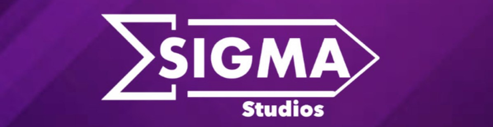

La culture parquiste, du grand écran aux salles de classe : le cinéma de la Fédération, La Libre et l'Académie Alward.
Cinéma Parquiste
Le cinéma de la Fédération est porté par Parc Productions, la compagnie dirigée par William Tadimi-Choinière, Consul et ministre de la Culture. Elle tient deux studios : Sigma Studios à Montréal et Bled Studios à Alger.
Parc Productions
La maison mère du cinéma parquiste, dirigée par William Tadimi-Choinière. Elle réunit les studios de la Fédération des deux côtés de l'Atlantique.
Sigma Studios
Le studio de production fondé par William en 2024, avec sa chaîne YouTube. C'est la maison de la saga Race Cart.
Bled Studios
La version algérienne de Sigma Studios, à Bir Khadem. Sa mission : faire rayonner la culture parquiste en Afrique avec du cinéma parquiste basé sur la réalité algérienne.

Sigma Studios
Fondé en 2024 par William Tadimi-Choinière, Sigma Studios est le premier studio de production de la Fédération. Il publie ses films sur sa chaîne YouTube, qui présente « les chefs-d'œuvre cinématographiques de la Parcum Fœderatio ». En plus de la saga Race Cart, le studio a aussi produit Les Chimistes de Côte St-Luc (2026) et L'Étranger (2026).
▶ La chaîne YouTube de Sigma Studios
La saga Race Cart
Race Cart est la saga phare de Sigma Studios. L'action se passe au Québec, et chaque film suit une année de l'histoire. Le premier film porte le laurier du Prix Martin du meilleur film 2024. Quatre films sont sortis, et tu peux tous les regarder ici.
RACE CART
Au parc Saint-Paul, Joe affronte Huge-O et Darkoslam pour le tout premier championnat, celui de 2024. Il le gagne, mais au prix d'un terrible accident. Il a gagné, mais à quel prix ?
RACE CART II : La Deuxième Chance
Tout juste sorti de l'hôpital, Joe se mesure à Savage. Il perd une course non officielle contre lui, mais découvre que Savage triche. Au championnat 2025, à Frédéric-Bach, Joe remporte la course officielle.
RACE CART III — Chapitre 1 : Le Roi
La CRA (Canadian Racing Association) veut racheter la F1, la ligue québécoise de course. Joe refuse. La CRA envoie alors son meilleur coureur, Le Roi, avec son fidèle étalon Joual, pour le battre. Le Roi sabote le cart de Joe pendant une course, et Joe a un nouvel accident… mais cette fois, le cart ne s'en sort pas.
RACE CART III — Chapitre 2 : Le Rival
Joe doit s'entraîner avec un nouveau cart, et son ancien adversaire Huge-O revient pour le coacher. On découvre qu'Huge-O était l'ami d'enfance du Roi : ils ont grandi ensemble, jusqu'à ce que le Roi se fasse acheter par les fédéraux et qu'Huge-O répande des rumeurs sur lui. Le Roi comprend que les fédéraux se servent de lui, mais il court quand même, cette fois pour lui-même. Joe gagne la course, et Huge-O et le Roi se réconcilient.
Race Cart 4
Le prochain film de la saga, attendu en 2027.
Agent DZ
Le prochain film, et le tout premier de Bled Studios, réalisé et se déroulant en Algérie.
Bled Studios
Bled Studios est la version algérienne de Sigma Studios, installé à Bir Khadem, à Alger. Il a été créé pour faire rayonner la culture parquiste sur le continent africain, avec du cinéma parquiste basé sur la réalité algérienne. Ses premières productions arrivent bientôt sur sa chaîne YouTube.
▶ La chaîne YouTube de Bled Studios
La Libre
Le document de La Libre sera publié ici bientôt.
Académie Alward
L'Académie Alward rassemble les institutions de savoir et d'art de la Fédération.
Parc Press Photo
Le concours de photographie de la Fédération, inspiré du World Press Photo présenté à Montréal. Il récompense les meilleures images prises sur le territoire parquiste et pendant les MMT.
Détails du concours à venir.
Collège St-Paul de la Croix
Le collège de la Fédération, nommé d'après la capitale.
La fiche d'inscription sera disponible ici bientôt.